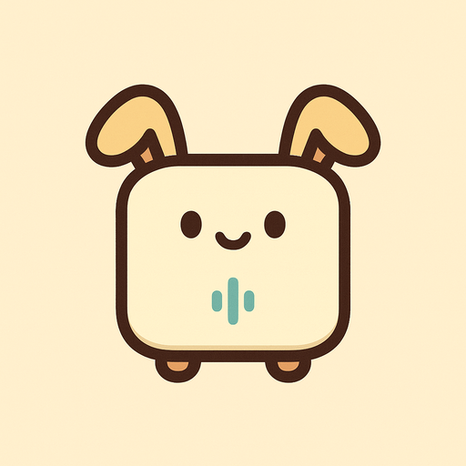
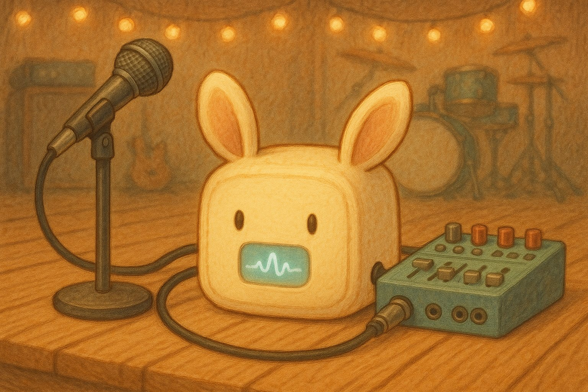

ROHM EDGE HACK CHALLENGE 2026 ・ チーム基地ハウリングを、鳴る前に止める。マイクとミキサーの間に挟む「現場で育つ音響番人」。調査・戦略・意思決定の成果物はぜんぶここから。

7/30夜MTG（2部・計2時間）でサキミミ②一本化を最終確認、役割分担も確定（ひかる=分析器側／けいと=主回路側・つなぎはI2C）。きょうは互換部品カタログで最終カートを固めて、ポチる。
新しい調査が終わるたびにここへ追加していく。
7/30夜MTGの依頼「買うパーツの互換品のバリエーションを増やしておいて」に回答。ICP1書込機の代替（0円Arduinoルート含む）・APM2の入手性再確認と保険ボード・プリICの互換3兄弟・発注先の集約シナリオ。発注前にこれを見てカートを最終確定する。
カタログを開く → 🔁⚖️ 2026-07-31 ・ 再検証を追記7/30夜MTGの新要件（10〜20本可変ノッチ・USB電源・ダイナミックマイク限定・I2C分担）を現行構成に当て直した。結論: ADAU1701構成は最適のまま変更不要。けいと疑問「SCF⇔デジポットは繋がるのか」への回答も収録。
再検証を読む →3つの作成物に必要な部品ぜんぶ。主要部品は1つずつ「スペック・寸法・メリデメ・現在価格・在庫・納期・買い方」まで掘ってある。店別カートの組み方・小物と工具・秋葉原実店舗ルートつき。今日注文したらいつ届くかも記載。
ポチりに行く → 📐 2026-07-30 ・ 設計の正作成物①見守り機・②ブースト機DSP版・③真アナログ版。ブロック図・信号レベル計画・完成条件（DoD）・受け入れテスト・リスク表。
開く → ⚖️ 2026-07-30 ・ けいとの宿題と答え合わせTeensy全ソフト処理・ESP32・ラズパイ・上位DSP・アナログVCAなど対抗案と本気で比較。判断基準→評価→結論の思考過程を全部見せる。「既製品組み合わせ」批判への回答つき。
検証を読む →ブラウザ内ELMその場学習のデモ。この学習エンジンの知見はサキミミの「ボタンで誤検知を矯正」にそのまま使う（※7/30 なでUIは廃止）。
あそぶ → 📳 2026-07-25 ・ スマホ実センサー版スマホの実加速度でその場学習・判定。特徴量CSV（elmkit用）と生波形CSV（公式Sim用）で持ち出せる。
スマホで開く → 🧰 2026-07-25 ・ 工作工具リスト工具・消耗品のチェックリスト。サキミミ用の追加分は小物・工具ページへ。
チェックする → 🧸 2026-07-25 ・ 歴史的資料ぬいぐるみ路線の試作3案比較。7/25夜に「アイデア確定前に買わない」でピボット。
開く → 🔌 2026-07-23 ・ 今も現役MyROHM 無料登録 → Sim ダウンロード → 起動確認の手順書。ひかるはまだ未開通 — 今週やる。
開く → 🛒 2026-07-23 ・ 今も現役DT-EBML63Q2557 のキット2種の違い・見積の取り方。データ・テクノへの見積電話が全工程の律速。
開く → 🧠 2026-07-23 ・ 今も現役データシート精読の全結果。HW-FFT（サキミミの心臓）の根拠はここ。音声系・実験リスト8本。
開く → 🤖 2026-07-23 ・ 開発効率Simに公開APIは無い→CSV入出力+Python再現実装（elmkit）で自動化する戦略。
開く → 🎯 2026-07-20 ・ 歴史的スナップショット最初の作戦。歴代優勝の勝ち筋分析はサキミミ戦略にも生きている。
開く →